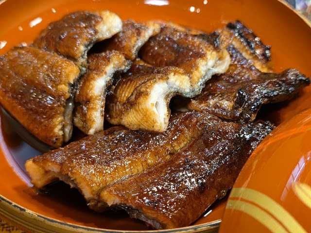
| 営業時間 | 火 11:00〜14:00 ／ 水・木・金・土・日 11:00〜14:00, 16:30〜20:00 |
|---|---|
| 定休日 | 月曜 |
| 住所 | 三重県津市大門４−１０ |
| 予約 | 可 — ☎ 059-228-4925 ／ 公式サイト |
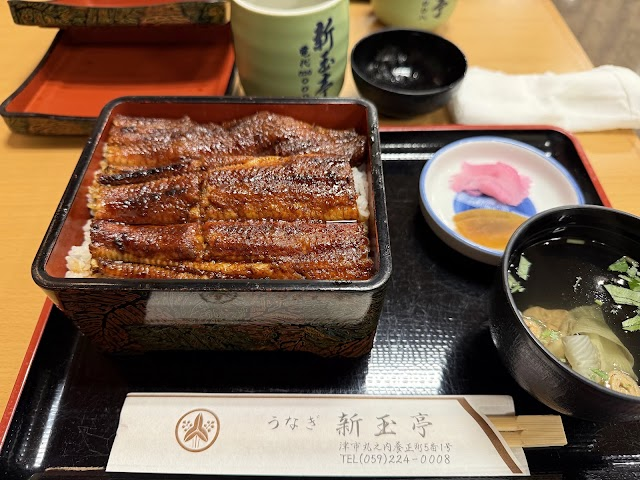
| 営業時間 | 水・木・金・土・日 11:00〜14:00, 16:00〜19:00 |
|---|---|
| 定休日 | 月・火曜 |
| 住所 | 三重県津市丸之内養正町５−１ |
| 予約 | 可 — ☎ 059-224-0008 ／ 公式サイト |
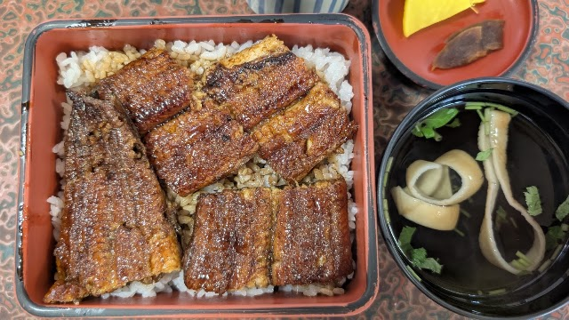
| 営業時間 | 月・火・水・木・金・日 11:00〜14:00 |
|---|---|
| 定休日 | 土曜 |
| 住所 | 三重県津市栄町２丁目４７２ |
| 予約 | 可 — ☎ 059-225-3445 ／ 公式サイト |
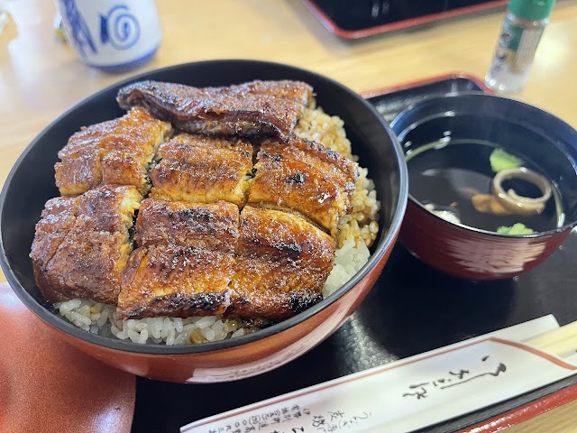
| 営業時間 | 月・水・木・金・土・日 11:00〜13:30 |
|---|---|
| 定休日 | 火曜 |
| 住所 | 三重県津市高野尾町６３３−２９ |
| 予約 | 要確認 — ☎ 059-230-0093 |
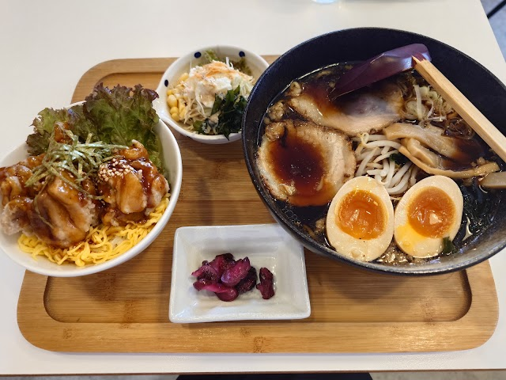
| 営業時間 | 火・水・木・金・土 11:30〜13:45, 17:30〜19:30 ／ 日 11:30〜13:45 |
|---|---|
| 定休日 | 月曜 |
| 住所 | 三重県津市丸之内４−２０ |
| 予約 | 要確認 — ☎ 059-223-1600 ／ 公式サイト |
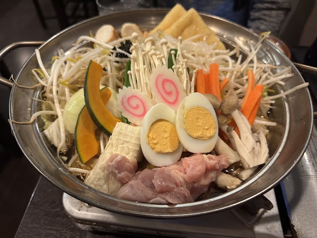
| 営業時間 | 月・火・水・木・金・土・日 17:00〜22:00 |
|---|---|
| 定休日 | なし(要最終確認) |
| 住所 | 三重県津市南丸之内９−４３ |
| 予約 | 可 — ☎ 059-224-0075 ／ 公式サイト |
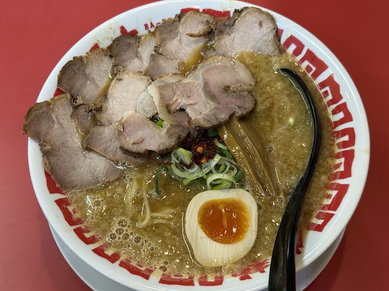
| 営業時間 | 月・火・水・木・金・土 11:30〜1:00 |
|---|---|
| 定休日 | 日曜 |
| 住所 | 三重県津市羽所町３１０ |
| 予約 | 要確認 — ☎ 059-221-6110 ／ 公式サイト |
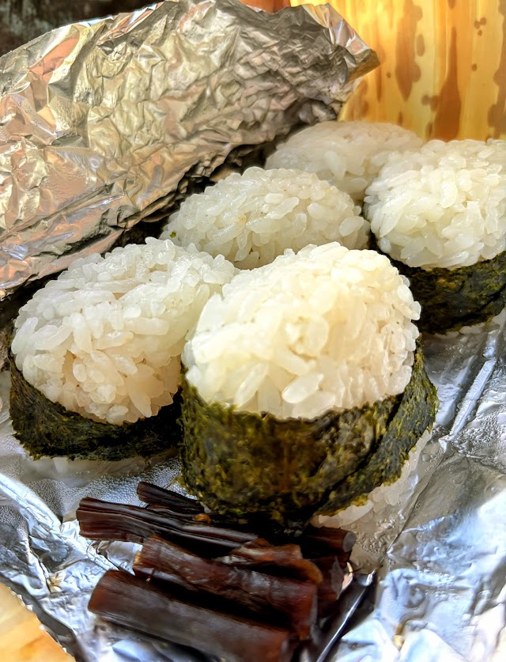
| 営業時間 | 月・火・水・木・金・土 9:30〜17:30 |
|---|---|
| 定休日 | 日曜 |
| 住所 | 三重県津市大門９−７ |
| 予約 | 要確認 — ☎ 059-228-6798 ／ 公式サイト |
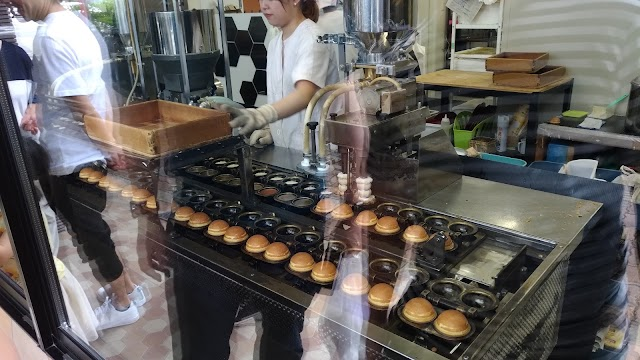
| 営業時間 | 月・火・木・金・土・日 9:45〜17:00 |
|---|---|
| 定休日 | 水曜 |
| 住所 | 三重県津市大門８−５ |
| 予約 | 要確認 — ☎ 059-228-3012 ／ 公式サイト |
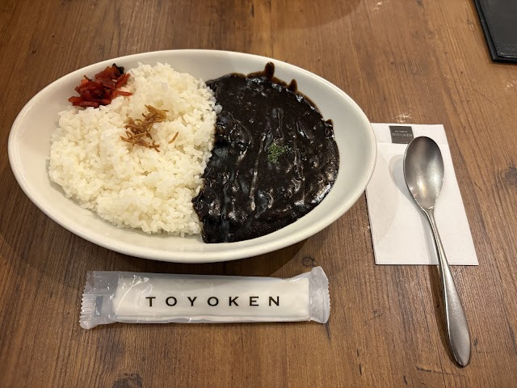
| 営業時間 | 火・水・木・金・土・日 11:00〜14:30, 17:00〜21:30 |
|---|---|
| 定休日 | 月曜 |
| 住所 | 三重県津市丸之内２９−１７ |
| 予約 | 可 — ☎ 059-225-2882 ／ 公式サイト |
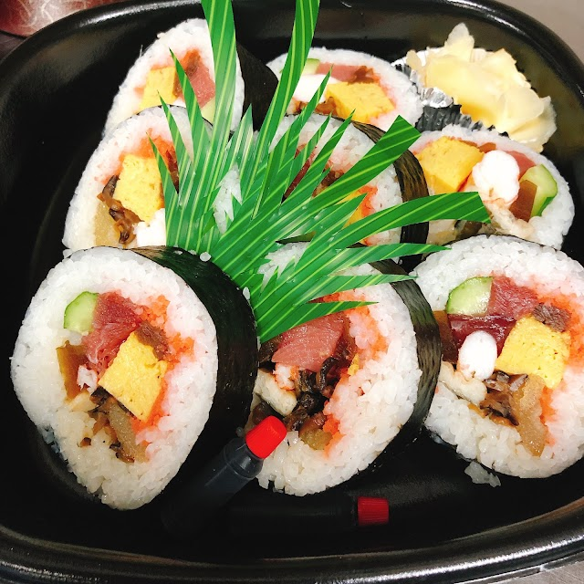
| 営業時間 | 月・火・木・金・土・日 11:30〜14:00, 17:00〜22:00 |
|---|---|
| 定休日 | 水曜 |
| 住所 | 三重県津市久居元町２３５０−６ |
| 予約 | 可 — ☎ 059-254-5000 ／ 公式サイト |
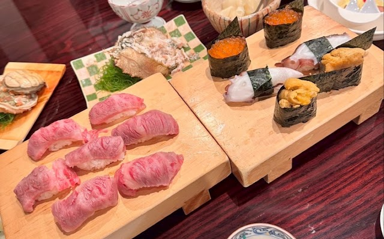
| 営業時間 | 火・水・木・金・土・日 11:30〜22:00 |
|---|---|
| 定休日 | 月曜 |
| 住所 | 三重県津市雲出本郷町１６４１ |
| 予約 | 可 — ☎ 059-264-7422 ／ 公式サイト |
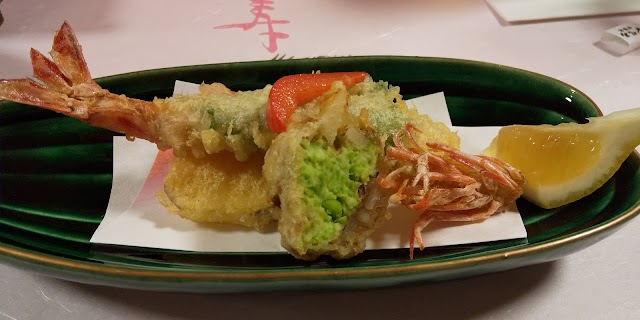
| 営業時間 | 月・火・水・木・金・土 12:00〜14:00, 18:00〜21:00 |
|---|---|
| 定休日 | 日曜 |
| 住所 | 三重県津市東丸之内１６−３３ |
| 予約 | 可 — ☎ 059-228-3754 ／ 公式サイト |
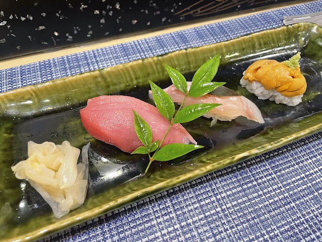
| 営業時間 | 月 18:00〜23:00 ／ 火・水・木・金・土 17:30〜23:00 |
|---|---|
| 定休日 | 日曜 |
| 住所 | 三重県津市広明町３６３ 魚伝ビル 1F |
| 予約 | 可 — ☎ 059-228-5051 |
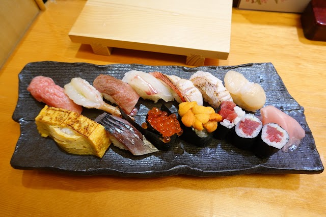
| 営業時間 | 火・水・木・金・土・日 11:30〜14:00, 17:30〜21:30 |
|---|---|
| 定休日 | 月曜 |
| 住所 | 三重県津市大谷町２４０ 大川学園ビル 1F |
| 予約 | 可 — ☎ 059-253-4004 ／ 公式サイト |
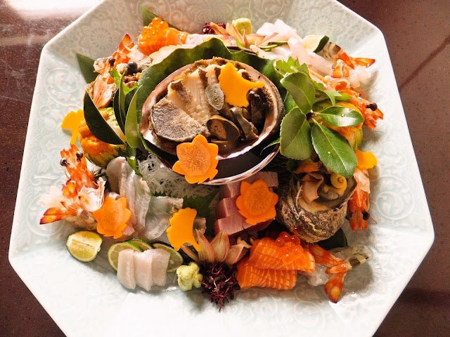
| 営業時間 | 月・水・木・金・土・日 11:00〜14:00, 17:00〜20:30 |
|---|---|
| 定休日 | 火曜 |
| 住所 | 三重県津市大門１０−２２ |
| 予約 | 可 — ☎ 059-228-2810 ／ 公式サイト |
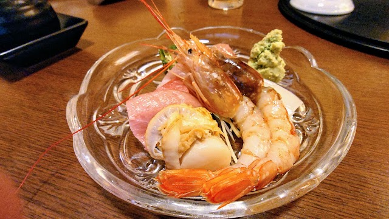
| 営業時間 | 月・火・木・金 11:30〜12:45, 17:00〜21:30 ／ 水 11:30〜21:30 ／ 土 17:00〜21:30 |
|---|---|
| 定休日 | 日曜 |
| 住所 | 三重県津市羽所町３１４ |
| 予約 | 可 — ☎ 059-227-3399 ／ 公式サイト |
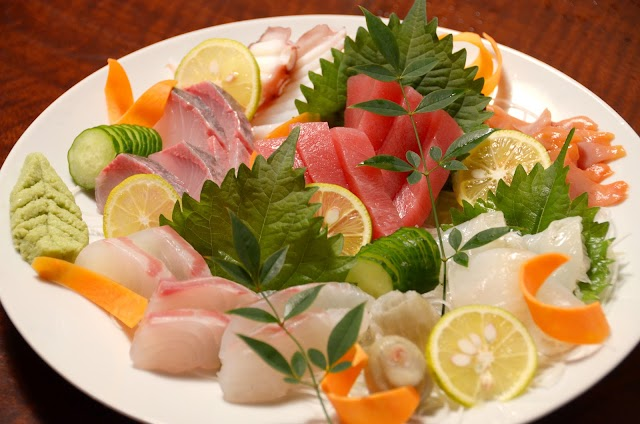
| 営業時間 | 月・火・木・金 11:30〜14:00, 18:00〜0:00 ／ 水・土 18:00〜0:00 |
|---|---|
| 定休日 | 日曜 |
| 住所 | 三重県津市大門２０−１３ |
| 予約 | 可 — ☎ 059-246-8300 ／ 公式サイト |
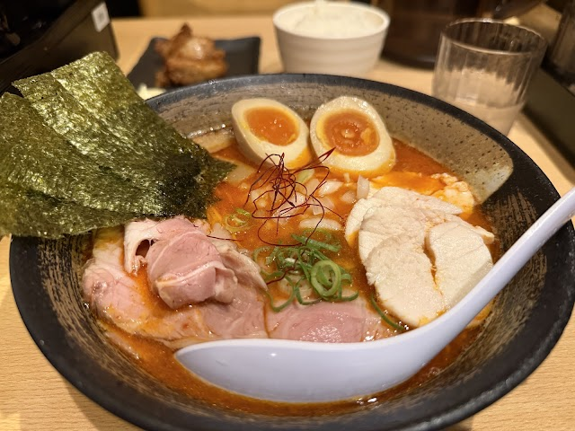
| 営業時間 | 月・火 11:00〜14:00 ／ 水・木・金 11:00〜14:00, 17:30〜21:00 ／ 土・日 11:00〜14:30, 17:30〜21:00 |
|---|---|
| 定休日 | なし(要最終確認) |
| 住所 | 三重県津市鳥居町２５１−２ |
| 予約 | 要確認 — ☎ 059-222-2396 ／ 公式サイト |
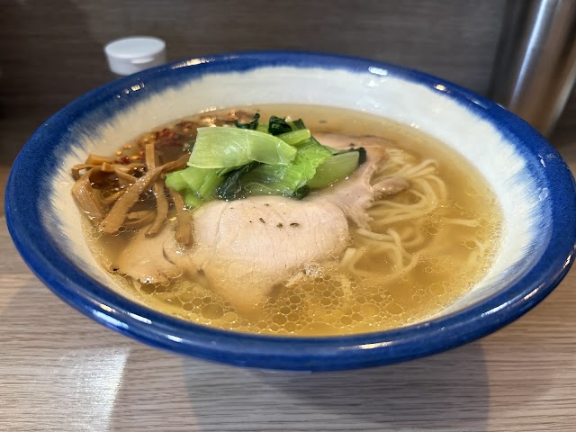
| 営業時間 | 月・火・水・金 11:00〜14:30 ／ 土 11:00〜14:30, 18:00〜20:30 ／ 日 10:00〜14:30 |
|---|---|
| 定休日 | 木曜 |
| 住所 | 三重県津市江戸橋１丁目１２２−２ テナント金谷 |
| 予約 | 要確認 — 公式サイト |
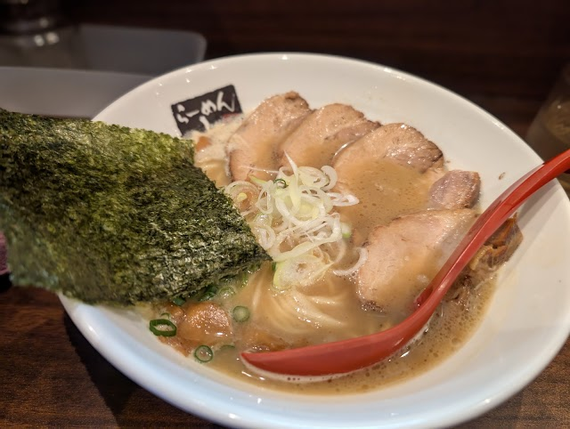
| 営業時間 | 月・火・水・木・金 11:00〜17:00 |
|---|---|
| 定休日 | 土・日曜 |
| 住所 | 三重県津市庄田町２４２４ |
| 予約 | 要確認 — ☎ 059-256-4855 ／ 公式サイト |
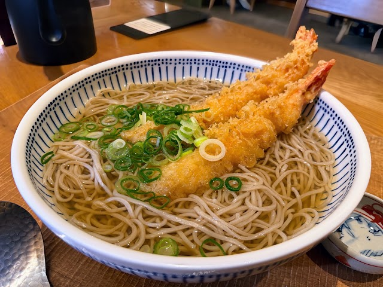
| 営業時間 | 月・火・金 11:30〜13:30 ／ 水・木・土 11:30〜13:30, 17:30〜19:30 |
|---|---|
| 定休日 | 日曜 |
| 住所 | 三重県津市大倉１０−４ |
| 予約 | 要確認 — ☎ 059-253-7341 ／ 公式サイト |
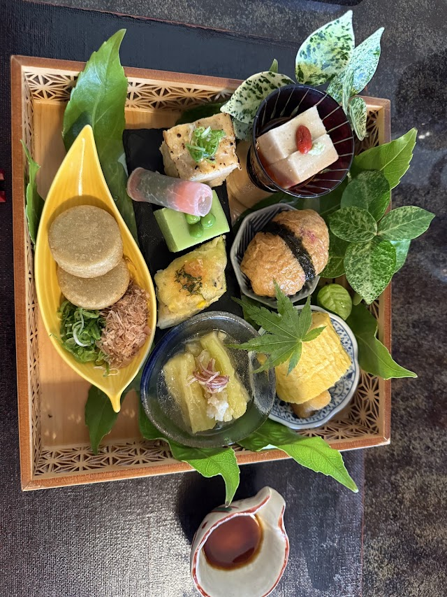
| 営業時間 | 木・金・土・日 12:00〜15:00 |
|---|---|
| 定休日 | 月・火・水曜 |
| 住所 | 三重県津市戸木町3503番地1 |
| 予約 | 可 — ☎ 059-255-1133 |
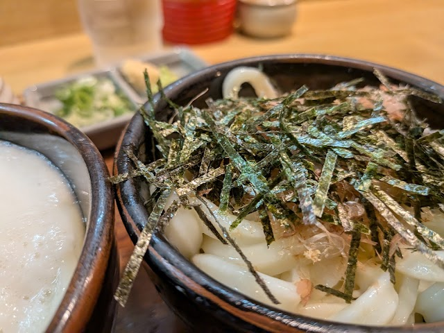
| 営業時間 | 火・水・金・土・日 11:00〜15:00 |
|---|---|
| 定休日 | 月・木曜 |
| 住所 | 三重県津市大門６−１９ |
| 予約 | 要確認 — ☎ 059-228-9782 |
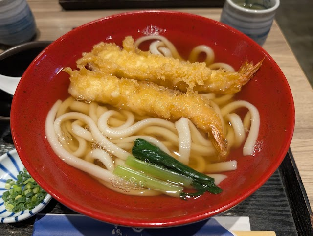
| 営業時間 | 水・木・金 11:00〜14:00 ／ 土・日 11:00〜14:00, 17:00〜20:00 |
|---|---|
| 定休日 | 月・火曜 |
| 住所 | 三重県津市大里睦合町３１１−３ |
| 予約 | 可 — ☎ 059-212-0438 ／ 公式サイト |
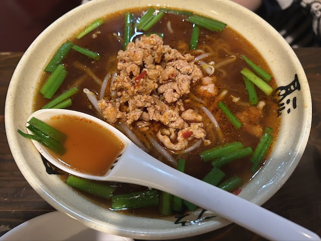
| 営業時間 | 火・水・木・金・土・日 11:30〜14:30, 17:00〜22:00 |
|---|---|
| 定休日 | 月曜 |
| 住所 | 三重県津市八町３丁目６−３ |
| 予約 | 可 — ☎ 059-261-1104 |
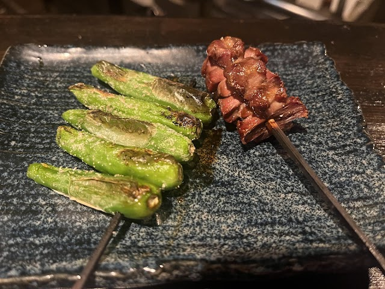
| 営業時間 | 月・火・水・木・金・土 18:00〜3:00 |
|---|---|
| 定休日 | 日曜 |
| 住所 | 三重県津市大門１７−２ |
| 予約 | 可 — ☎ 059-261-5893 ／ 公式サイト |
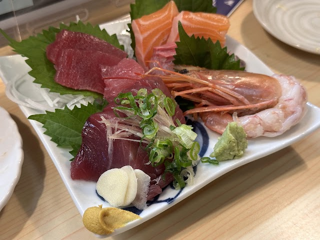
| 営業時間 | 月・火・水・木・金・土 17:00〜22:00 |
|---|---|
| 定休日 | 日曜 |
| 住所 | 三重県津市大門２６−１９ |
| 予約 | 可 — ☎ 090-4117-2112 ／ 公式サイト |
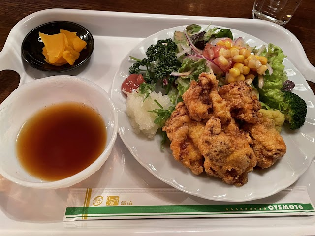
| 営業時間 | 火・水・木・金・土 19:00〜2:00 |
|---|---|
| 定休日 | 月・日曜 |
| 住所 | 三重県津市大門２３−４ |
| 予約 | 可 — ☎ 059-229-5055 |
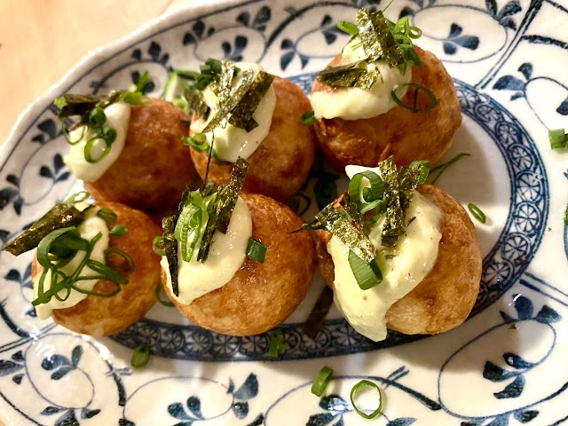
| 営業時間 | 月・火・水・木・金・土・日 18:00〜3:00 |
|---|---|
| 定休日 | なし(要最終確認) |
| 住所 | 三重県津市大門２４−２ 大門ＳＩビル |
| 予約 | 可 — ☎ 059-261-8322 ／ 公式サイト |
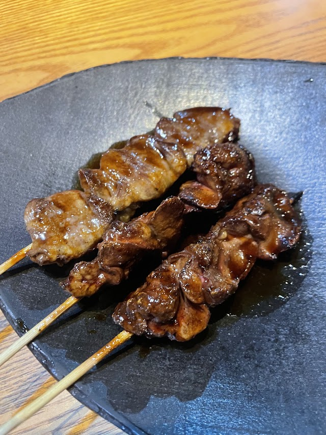
| 営業時間 | 月・火・水・木・金・土・日 17:00〜23:00 |
|---|---|
| 定休日 | なし(要最終確認) |
| 住所 | 三重県津市羽所町３８１ 津三交ビルディング アネックス2Ｆ |
| 予約 | 可 — ☎ 050-5303-5364 ／ 公式サイト |
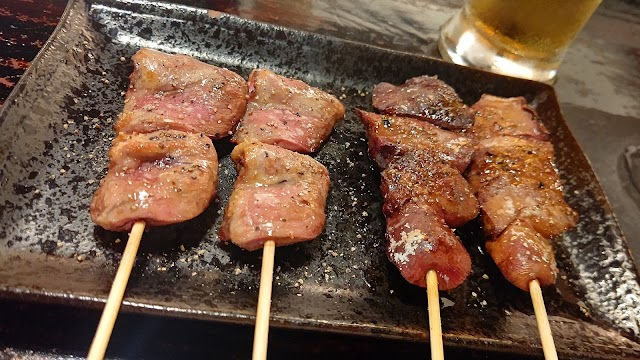
| 営業時間 | 月・火・水・木・金・土・日 17:30〜22:00 |
|---|---|
| 定休日 | なし(要最終確認) |
| 住所 | 三重県津市栄町２丁目４７３ メイセンカクビルⅡ １F |
| 予約 | 可 — ☎ 059-246-5540 ／ 公式サイト |
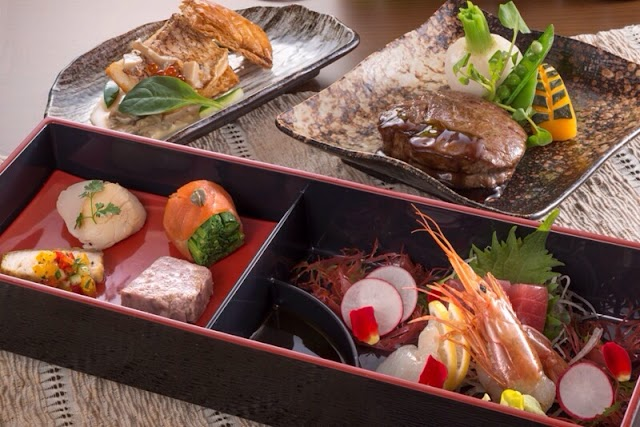
| 営業時間 | 月・火・水・木・金・土 17:00〜23:00 |
|---|---|
| 定休日 | 日曜 |
| 住所 | 三重県津市羽所町３０８ MK BLDG ２F |
| 予約 | 可 — ☎ 059-222-4900 ／ 公式サイト |
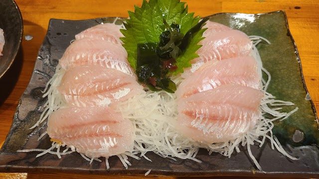
| 営業時間 | 月・火・水・木・金・土 18:00〜0:00 |
|---|---|
| 定休日 | 日曜 |
| 住所 | 三重県津市西丸之内９−３ |
| 予約 | 可 — ☎ 090-9923-2299 |
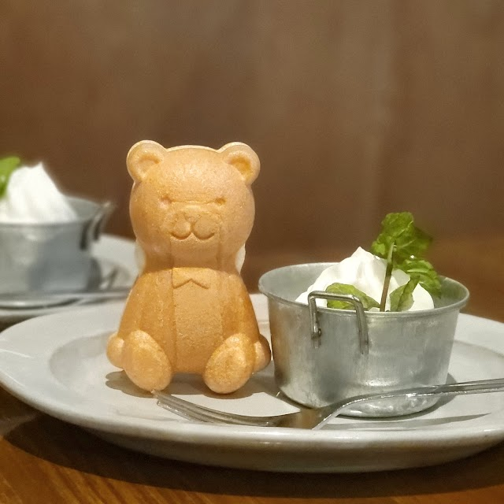
| 営業時間 | 月・火・水・木・金・土・日 17:00〜0:00 |
|---|---|
| 定休日 | なし(要最終確認) |
| 住所 | 三重県津市栗真町屋町４８７−１１ |
| 予約 | 可 — ☎ 059-253-1744 ／ 公式サイト |
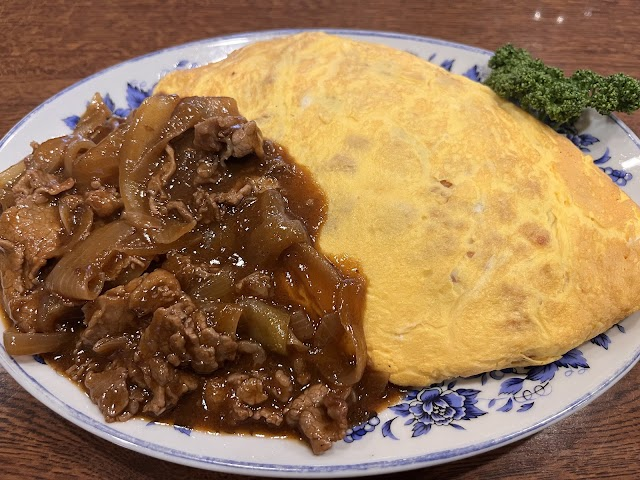
| 営業時間 | 月・火・水・木・金・土 11:00〜14:30, 17:00〜21:00 |
|---|---|
| 定休日 | 日曜 |
| 住所 | 三重県津市中央５−５ |
| 予約 | 可 — ☎ 059-228-2748 ／ 公式サイト |
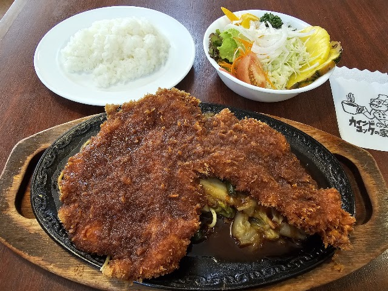
| 営業時間 | 月・火・水・土・日 9:00〜21:00 ／ 木 9:00〜16:00 |
|---|---|
| 定休日 | 金曜 |
| 住所 | 三重県津市下弁財町津興３０５３ |
| 予約 | 可 — ☎ 059-226-5629 |
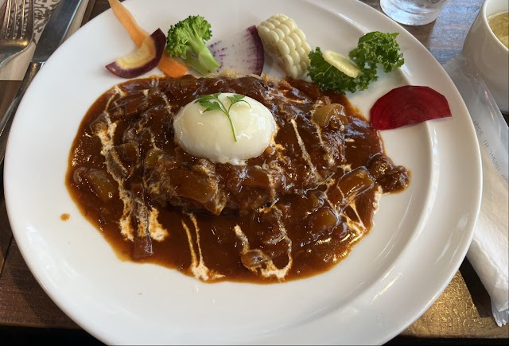
| 営業時間 | 月・火・金・土・日 11:00〜14:00, 17:00〜21:00 |
|---|---|
| 定休日 | 水・木曜 |
| 住所 | 三重県津市安濃町曽根５７２−４ |
| 予約 | 可 — ☎ 059-268-0477 ／ 公式サイト |
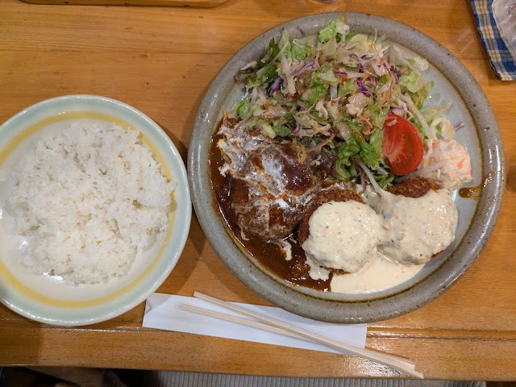
| 営業時間 | 月・水・木・金・土・日 17:00〜21:00 |
|---|---|
| 定休日 | 火曜 |
| 住所 | 三重県津市八町３丁目４−６ |
| 予約 | 可 — ☎ 059-227-5035 |
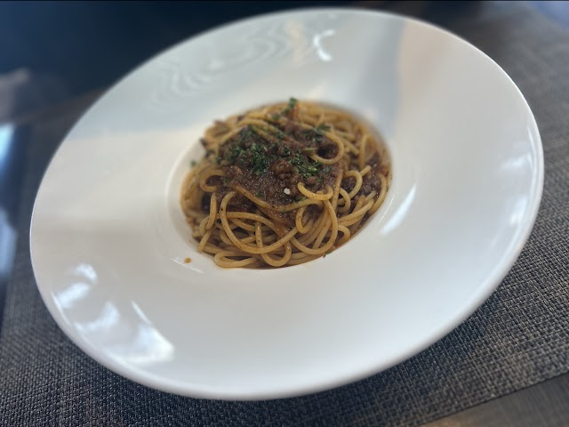
| 営業時間 | 火・水・木・金・土・日 11:00〜20:00 |
|---|---|
| 定休日 | 月曜 |
| 住所 | 三重県津市寿町１８−２１ |
| 予約 | 可 — ☎ 059-213-2882 ／ 公式サイト |
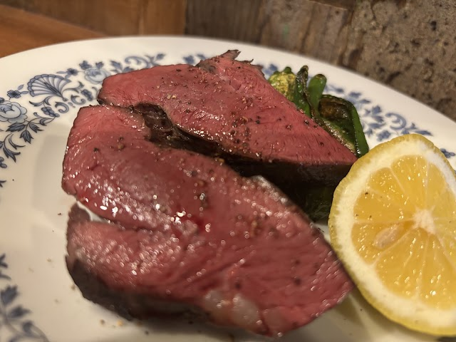
| 営業時間 | 月・土 18:00〜22:00 ／ 火・水・木 11:30〜14:00, 18:00〜22:00 ／ 金 11:30〜14:00, 18:00〜23:30 |
|---|---|
| 定休日 | 日曜 |
| 住所 | 三重県津市西丸之内９−２ カサキュウスクエアⅡ 1F |
| 予約 | 可 — ☎ 059-229-8300 ／ 公式サイト |
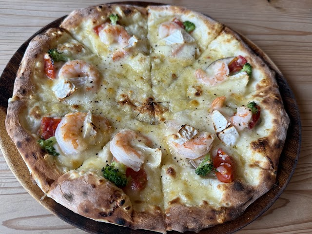
| 営業時間 | 水・木・金・土・日 11:00〜17:00 |
|---|---|
| 定休日 | 月・火曜 |
| 住所 | 三重県津市栗真町屋町１５５６−５ |
| 予約 | 可 — ☎ 090-5620-5179 ／ 公式サイト |
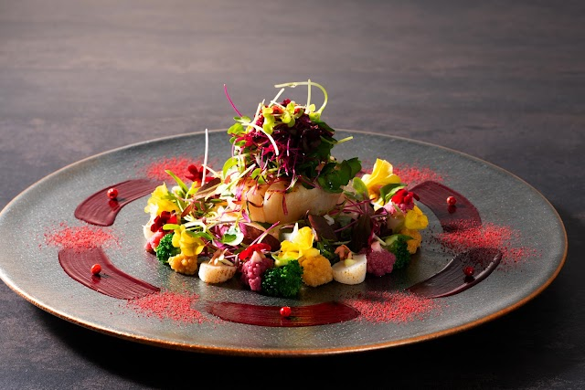
| 営業時間 | 水・木・金・土・日 10:00〜20:00 |
|---|---|
| 定休日 | 月・火曜 |
| 住所 | 三重県津市あのつ台５丁目２−１ |
| 予約 | 要確認 — ☎ 059-236-5583 ／ 公式サイト |
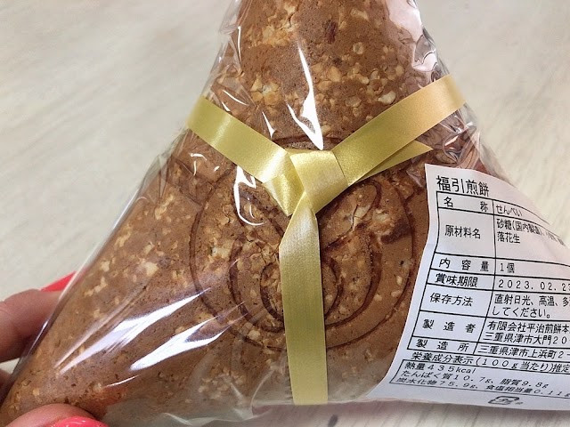
| 営業時間 | 月・火・木・金・土・日 9:00〜18:00 |
|---|---|
| 定休日 | 水曜 |
| 住所 | 三重県津市大門２０−１５ |
| 予約 | 要確認 — ☎ 059-225-3212 ／ 公式サイト |
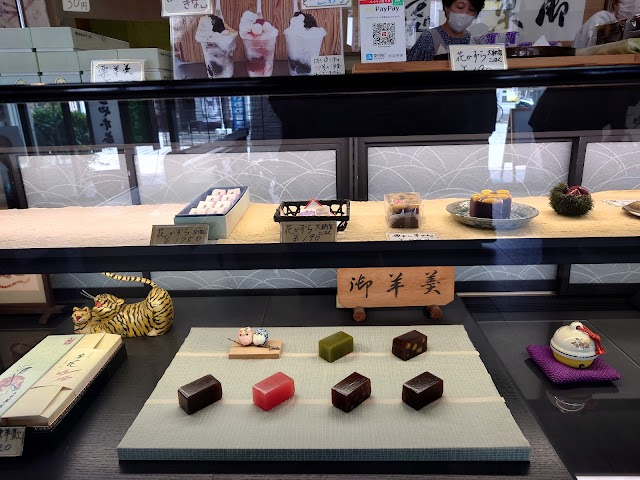
| 営業時間 | 火・水・木・金・土・日 9:00〜17:00 |
|---|---|
| 定休日 | 月曜 |
| 住所 | 三重県津市大門５−８ |
| 予約 | 要確認 — ☎ 059-228-4802 ／ 公式サイト |
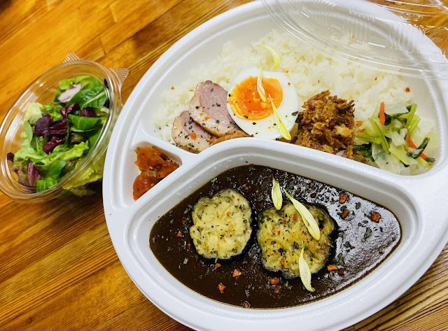
| 営業時間 | 月・火・水・木・金・土・日 9:00〜17:00 |
|---|---|
| 定休日 | なし(要最終確認) |
| 住所 | 三重県津市中央１−１ |
| 予約 | 要確認 — ☎ 070-2318-0605 |
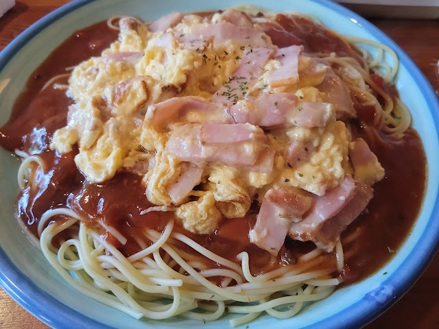
| 営業時間 | 月・火・水・木・金 7:30〜22:00 |
|---|---|
| 定休日 | 土・日曜 |
| 住所 | 三重県津市羽所町３４６−１ |
| 予約 | 可 — ☎ 059-224-0110 ／ 公式サイト |
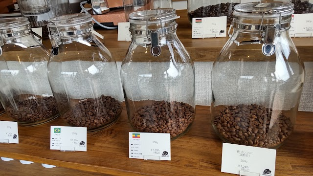
| 営業時間 | 水・木・金・土・日 10:00〜19:00 |
|---|---|
| 定休日 | 月・火曜 |
| 住所 | 三重県津市鳥居町２６３ |
| 予約 | 要確認 — ☎ 059-253-2775 ／ 公式サイト |
| 営業時間 | 火・水・木・金・土 11:00〜17:00 |
|---|---|
| 定休日 | 月・日曜 |
| 住所 | 三重県津市長岡町３０６０−２ |
| 予約 | 要確認 — 公式サイト |
| 営業時間 | 月・火・木・金 9:30〜20:00 |
|---|---|
| 定休日 | 水・土・日曜 |
| 住所 | 三重県津市大谷町８９−１５ |
| 予約 | 要確認 — ☎ 090-6082-9126 ／ 公式サイト |
| 営業時間 | 月・火・水・木・金・土・日 7:00〜19:00 |
|---|---|
| 定休日 | なし(要最終確認) |
| 住所 | 三重県津市河芸町三行２５５−４ |
| 予約 | 要確認 — ☎ 059-244-2755 ／ 公式サイト |
本ガイドは個人利用目的で作成。掲載情報は2026年9月時点の調査に基づく。写真出典: Google Maps投稿写真(©各投稿者/Google)。